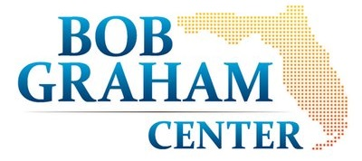
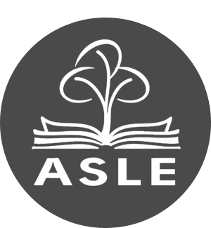
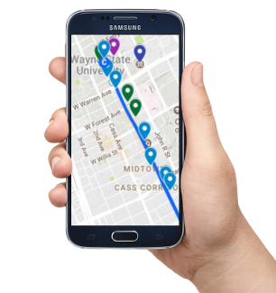

Grant-Funded Projects
Current Projects
The Digital Classroom in the Augmented Forest
Rhetorical Field Methods for Place-Based Teaching and Research
While Plato's Academy was founded in the sacred olive groves of Akademos just outside Athens, today the “groves of Academe” probably don’t conjure the image of a forest. Yet, forests are an enduring place for environmental learning and engagement. As such, this project investigates the use of location-based media and deep mapping methods for place-based science and environmental communication. This research will result in a digital website and augmented reality experience in the North Woods on the URI campus which will be produced and curated by students in BES 521: Rhetorical Field Methods for Science Communication. Funding for this project was generously provided through a small grant from the North Woods Educational Advisory Committee.
STEEP (II)
Sources, Transport, Exposure & Effects of PFAS
The STEEP II project (2022-2027) is studying the effects of PFAS (or or poly- and perfluoroalkyl substances) on environmental and human health. As part of this research, the Research Translation Core team is working to disseminate information on PFASs and their human health impacts and STEEP’s scientific accomplishments to its stakeholders. We are using community-engaged strategies to make these important findings visble and legible for the public. You may find more information about the project on the STEEP Website.
RIAFSFP
Rhode Island Agriculture and Food Systems Fellowship Program
 The Rhode Island Agriculture and Food Systems Fellows Program (AFSFP) was established in 2022 to engage and train students passionate about careers centered on food – as producers, processors, policymakers, educators, advocates or communicators. The program provides ten students per year (beginning in 2023 through 2026) funded, year-long experiential learning opportunities with academic researchers and industry professionals working in sustainable agricultural intensification, food and nutrition translation, science communication, and agricultural science policy leadership. This is an ongoing project, and you can learn more on the AFSFP Program Website.
The Rhode Island Agriculture and Food Systems Fellows Program (AFSFP) was established in 2022 to engage and train students passionate about careers centered on food – as producers, processors, policymakers, educators, advocates or communicators. The program provides ten students per year (beginning in 2023 through 2026) funded, year-long experiential learning opportunities with academic researchers and industry professionals working in sustainable agricultural intensification, food and nutrition translation, science communication, and agricultural science policy leadership. This is an ongoing project, and you can learn more on the AFSFP Program Website.
Completed Projects
Ecotour
Visualizing Environments with Augmented Reality
 EcoTour is a downloadable smartphone application that allows visitors to this Florida State Park to access information about the human-caused environmental threats facing Paynes Prairie as well as undocumented histories of the park. Through a multimodal research and writing assignment in three different writing courses, students produced the content for the application. Similar to an audio walking tour, the app allows users to walk through the La Chua trail and learn more about the ecological diversity and environmental threats within the preservation area. EcoTour provides access to a large repository of information using technology that many visitors already have in their pocket. This project was funded by a Bob Grahm Center Healthy Civic Campus & Community Grant from the University of Florida.
Research output: Shannon Butts and Madison Jones, "Deep mapping for environmental communication design." Communication Design Quarterly, vol. 9, no. 1 (March 2021), 4–19. DOI:https://doi.org/10.1145/3437000.3437001 [Awarded the 2022 CCCC Technical and Scientific Communication Award in the category of Best Article on Pedagogy or Curriculum in Technical or Scientific Communication].
Articulate Detroit
An AR Walking Tour of Woodward Avenue
 A location-based digital writing project exhibited at the 2017 Association for the Study of Literature and the Environment (ASLE, 2017) conference held in Detroit, Michigan, supported by the conference organizers. The project offers a generative model for how mobile technologies might be employed within writing studies scholarship and in public humanities contexts more broadly. This project uses free mobile application software to generate augmented reality displays at eighteen locations along Detroit’s iconic Woodward Avenue. Funding for this program was generously provided through a subvention grant from the Association for the Study of Literature and Environment.
Research output: Jacob Greene and Madison Jones, "Articulate Detroit: Augmenting Public Writing.” Co-authored with Jacob Greene. Computers & Composition Online, Spring 2019.
Mentoring & Consulting
Trace ARCs
Augmented Reality Criticism
As a coordinator for the Trace ARCs series, I have created several digital projects and served as a consultant for faculty and student projects. These interdisciplinary projects use AR to overlay digital content (images, video, text, sound, ect.) through mobile smartphone applications. Trace ARCs intervene in locations using place-based methods for digital advocacy, social justice, and civic writing. ARCs challenge dominant narratives about historical sites, places of community value, and public monuments.
MassMine
Your Access to Data
MassMine was founded by Nicholas Van Horn and Aaron Beveridge in 2014 and received its first round of funding from the National Endowment of the Humanities (NEH) in 2015. I was named an intellectual contributor to the project in the 2019 NEH funding for demonstrating its use in public rhetoric and digital humanities research. I used MassMine to conduct research and collect an initial data set about the 2016 fire at Toomer’s Corner in Auburn, Alabama—which followed a victory by Auburn University’s football team over LSU and which destroyed the iconic “Toomer’s Oak Trees.” I used MassMine to collect Twitter Data about the fire to visualize some of the ways the event circulated online in the week following the fire and to demonstrate that the Toomer’s Oaks took on new topoi as a rhetorical commonplace for the Auburn community in the wake of the iconoclastic event.
Research output: Madison Jones, "Sylvan Rhetorics: Roots and Branches of More-than-Human Publics." Rhetoric Review, 38:1, 63-78, 2019, DOI: 10.1080/07350198.2019.1549408.
Augmenting Sustainability
An AR App for the UF Campus and Gainesville Community
 In Spring 2019, I served as a mentor and consultant for this student-led project, conducted in collaboration with the Sustainaibility Studies program at the Unviersity of Florida and the Trace Innovation Initiative. I assisted two students in developing an augmented reality tour of UF's campus focusing on sustainability and the community. The project was part of a Sustainability Studies course and served as part of their Green Gator Graduation Chord requirement. Presently, this project is being expanded as a class assignment with the ultimate goal of creating a campus-wide project. This project was funded through support from a Creative Campus Catalyst Fund Grant at UF.